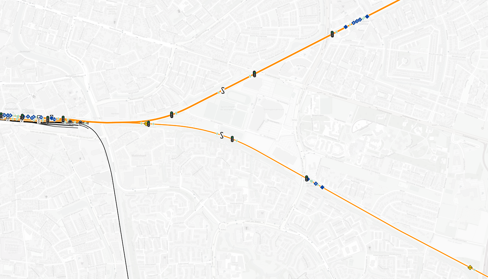
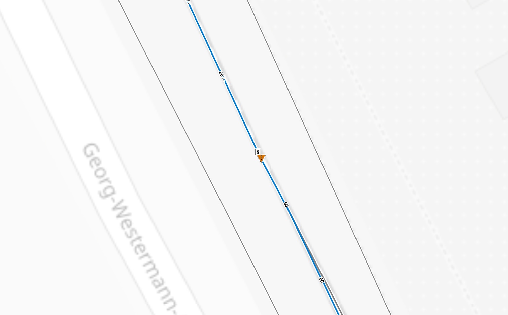
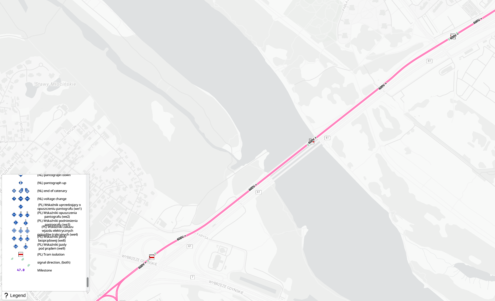
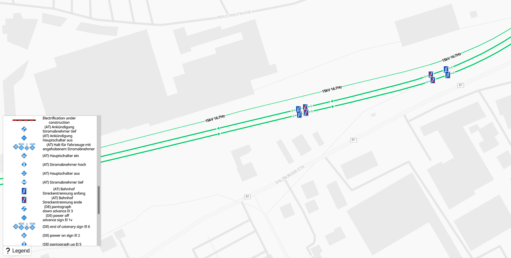
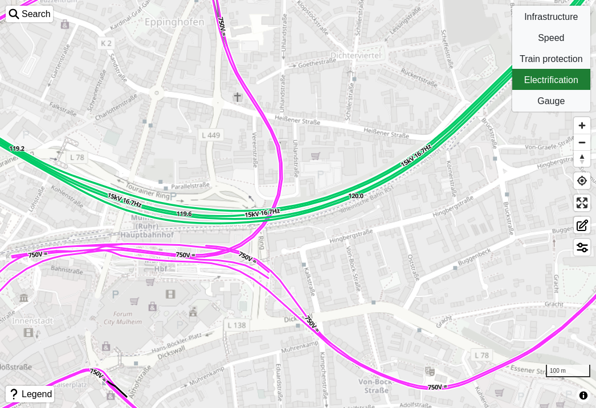
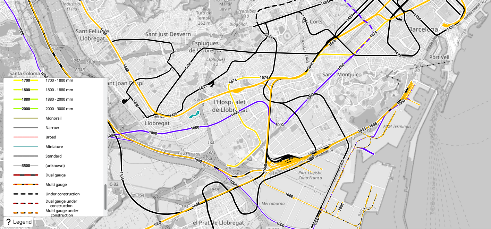
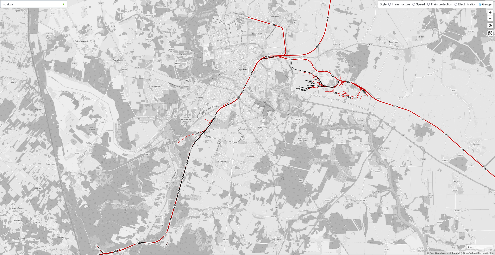

News
Add news section
December 2024

A news button is available to show recent changes to the OpenRailwayMap. If there are new changes, a blue circle will highlight the news button.
Cluster stations
December 2024
Stations are clustered by name if they within 400 meters of each other. Stations of different types are not clustered. The clustering is shown per station type as an area around the stations in the same color as the stations.
Render VAGN German tram signals
December 2024
Tagged German VAGN Nu tram signals are rendered in the train protection layer.
Disused, abandoned, proposed and razed railway lines
December 2024
Abandoned, disused, proposed and razed railway lines are shown on the map.
Improve content of popups
December 2024
The content of popups is structured in features. Every layer on the map has a defined set of features, usually the same as those shown in the legend. The features have a set of attributes that are shown in the popup, as well as a name.
Render more German tram signals
December 2024
Tagged German Sh 4 tram signals are rendered in the train protection layer.
Dark mode
December 2024
The OpenRailwayMap has support for dark mode. By default system mode is used, which assumes the preferred color mode configured in the operating system / browser. The color mode can be changed to explicit light or dark mode in the configuration screen.
Render more Polish electrification signals
December 2024
Tagged Polish we10 electrification signals are rendered in the electrification layer.
Render more Dutch signals
December 2024

The rendering of Dutch signalling is improved. The signals that belong to the speed layer have moved to the speed layer. Tagged Dutch signals, such as middenvoetbrugsein, stopplaatssein, treinlengtebord, distant crossing, drive on sight, station, ETCS cab signalling, ATB distant, ATB start, ATB code, ATB end, ATB codewissel, Einde beveiligd gebied and the positions of ETCS stop markers are rendered on the map.
Render German VGF tram electrification signals
November 2024

Tagged German VGF tram electrification signals, such as st9 and st10 are rendered in the electrification layer.
Render layer for track class
November 2024
A layer has been added on the map to display the track class of the railway line. The track class could be used in the future to automatically derive speed limits for certain types of transport and countries.
Zoom further
November 2024

It is possible to zoom in until zoom level 20. This helps when viewing signals that are very close together.
Render Spanish electrification signals
November 2024
Tagged Spanish electrification signals, such as FI14A, FI14B, FI14C, FI14D, FI14E, FI14F, FI14G, FI14H, FI14I and FI14J are rendered in the electrification layer.
Render Swiss electrification signals
November 2024
Tagged Swiss electrification signals, such as 703, 704, 705, 706, 707, 708, 709, 710, 711, 712, 713, 714, 715, 716, 717, 717.1, 718, 718.1 and 719 are rendered in the electrification layer.
Render Luxembourgian electrification signals
November 2024
Tagged Luxembourgian electrification signals, such as ESFA, ESFAp/TA, ESFAp/TE, ESFAp/TR, ESFCC/A, ESFCC/E and ESFCC/F are rendered in the electrification layer.
Render Polish tram isolation signals
November 2024

Tagged Polish tram electrification signals, such as ct-1 and ct-2 are rendered in the electrification layer.
Render Belgian electrification signals
November 2024
Tagged Belgian electrification signals, such as PBA, PBE and PRL are rendered in the electrification layer.
Render more German tram electrification signals
November 2024
Tagged German tram electrification signals, such as DE-BOStrab:st4, DE-HHA:s2, DE-BOStrab:st6, DE-HHA:s1, DE-BOStrab:st3 and DE-BOStrab:st5 are rendered in the electrification layer.
Improve milestone visibility
November 2024
The difference between railway line labels and milestones is more clear. The milestones use a diferent color and font, and are always rendered upright. The railway line labels are rendered along the track.
Render French electrification signals
November 2024

Tagged French electrification signals, such as SECT, CC_EXE, CC_FIN, REV, BP_DIS, BP_EXE, BP_FIN, BIMODE, FIN_CAT, JALON_ARRET and GIVRE are rendered in the electrification layer.
Render Dutch electrification signals
November 2024
Tagged Dutch electrification signals, such as 306a, 307a, 308a, 309a, 310a, 311 and 320 are rendered in the electrification layer.
Render more German electrification icons
November 2024
Tagged German electrification signals, such as Streckentrennung, ICE Schaltmerkhilfe and combined El1 and El2 signals are rendered in the electrification layer.
Render milestones without decimal for medium zoom
November 2024
Milestones are rendered without the decimal point for the zoom levels where only milestones with positions with zero decimals are shown.
Improve rendering of signal boxes
November 2024
Signal boxes are rendered as dots with their reference below the signal box.
Render Finnish electrification icons
October 2024
Tagged Finnish electrification signals, such as T-120, T-121, T-122, T-123, T-124A, T-125, and T-133 are rendered in the electrification layer.
Render more Austrian electrification icons
October 2024

Tagged Austrian electrification signals, such as Streckentrennung and schaltzeiger are rendered in the electrification layer.
Render Polish electrification icons
October 2024
Tagged Polish electrification signals, such as we1, we2, we3, we4, we8 and we9 are rendered in the electrification layer.
Dynamic icon hover color
October 2024
Icons all have a "halo" (a thin border of a single color, for contrast). The halo is now dynamic in color, and supports showing a hover action by changing to a yellow color. The dynamic coloring also allows the railway line preferred direction icons to use the color of the railway line.
Loading gauge layer
October 2024
A new layer shows the loading gauge of railway lines.
Render railway preferred direction
October 2024
The preferred direction of railways is shown as small arrows on the railway line, in the color of the line.
Show milestones on every layer
October 2024

Milestones are shown in every layer for improved orientation.
Render more Swedish signals
October 2024
Tagged Swedish signals, such as Mellansignal (dvärg), Mellansignal, Växlingsdvärgsignal, Skyddsstopplykta, Mellanblocksignal, Utfartsblocksignal, Infartssignal, Försignal, Repeterbalister, Repetersignal, Orienteringstavla huvudsignal and Vägskyddssignal are rendered in the train protection layer.
Render more Swiss signals
September 2024
Tagged Swiss signals, such as Vorsignal System L, Mini-Hauptsignal System L, Hauptsignal System L, Vorsignal System N, Hauptsignal System N, Minor signal and Fahrtstellungsmelder are rendered in the train protection layer.
Render more train protection systems
September 2024
There are many train protection systems in use around the world. Some were tagged, but not displayed on the map. All tagged and documented train protection systems are displayed on the map, for example Chinese Train Control System (CTCS), Advanced Civil Speed Enforcement System (ACSES), Автоматическая локомотивная сигнализация (ALS), Advanced Speed Enforcement System (ASES), Automatic Train Protection (ATP), Automatic Warning System (AWS), Continuous Automatic Warning System (CAWS), Communications Based Train Control (CBTC), Crocodile, EBICAB, Egyesített Éberségi és Vonatbefolyásoló Berendezés (EÉVB), Electronic Train Management System (ETMS), Elektronikus Vonatmegállító (EVM), HastighedsKontol og automatisk Togstop (HKT), Integra Signum, Incremental Train Control System (ITCS), Liniový Systém (LS), Open Control of Trains, Interchangeable & Integrated System (OCTYS), Offre Urbaine Renouvelée et Améliorée, Gérée par un Automatisme Nouveau (OURAGAN), Système d'Aide à la Conduite, à l'Exploitation et à la Maintenance (SACEM), Système d'Automatisation de l'Exploitation des Trains (SAET), SELCAB, Samoczynne Hamowanie Pociągu (SHP), Sistema di Supporto alla Condotta (SSC), 定位置停止装置 (TASC), Transmissie Baken-Lokomotief (TBL), Train Protection & Warning System (TPWS), Zugbeeinflussung S-Bahn Berlin (ZBS), Zugsicherung mit Linienleiter 1990 (ZSL 90), Zugbeeinflussung (ZUB) and Автоматическая блокировка (SATP).
Use vector tile layer as background map
September 2024
The background map can now be configured with a vector map. Configure a URL of a style JSON, and it will be used to render the background map.
Render more railway amenities
September 2024

Railway amenities such as fuel, sand stores, coaling facillities, washing facilities, water towers, water cranes, waste disposal, compressed air, preheating, loading gauges, humps (part of hump yards), defect detectors, automatic equipment identification, buffer stops and derailers are rendered in the standard layer.
Render reporting marks
September 2024
Reporting marks are rendered for railway lines.
Render British signals
September 2024
Tagged British main and shunting signals are rendered in the train protection layer.
Render more Austrian signals
September 2024

Tagged Austrian signals, such as Hauptsignal with abfahrt, Hauptsignal with fahrerlaubnissignal, bedarfshalt, haltestellentafel, schutzsignal, ek_überwachungssignal, pfeifpflock, gruppenpfeifpflock, endpflock, fahrwegende, haltepunkt, haltscheibe, abfahrt, fahrerlaubnissignal, signalnachahmer and lzb-bereichskennzeichen, and support for combinations of main and minor signals with abfahrt or fahrerlaubnissignal are rendered in the train protection layer.
Facility and milestone search UI
July 2024
The OpenRailwayMap has a search UI to search for facilities on the map, as well as milestones along railway lines. The search results will be shown in a list or on the map.
Search API is available
June 2024
The facility and milestone search API, forked from the upstream OpenRailwayMap API is available on https://openrailwaymap.fly.dev/api. An OpenAPI description of the available APIs, as well as a UI to discover the APIs is available.
Configuration for map background opacity and saturation
June 2024
The saturation and opacity of the background map can be configured. In addition, the URL of the background tiles can be configured to a tile source of choice. The configuration will be stored in the LocalStorage of the browser.
Render lubricators and vacancy detection
June 2024
Lubricators are shown in the standard layer. Vacancy detection in the form of insulated rail joints and axle counters are shown in the train protection layer.
Documentation for contributing to OpenRailwayMap
May 2024
The documentation how you can contribute to OpenRailwayMap has been expanded. Detailed instructions for adding a train protection system, a railway signal or the user interface in general are available, including examples.
Render Polish signals
May 2024
Tagged Polish signals, such as d1, do, m, ms, osp, s, s10, s13, s1, s2, s6, s9, sp1, sp2, sr, w1, w4, w5, w6, w7, w10, w11, w12, w13, w16, w17, w25, w29, w32, w33, w34, wetcs, z1, wm4, wm16 and wm17 are rendered in the train protection layer.
Improved mobile usability
May 2024
The UI of the OpenRailwayMap is the same for a browser on a desktop, laptop or mobile device. The screen sizes are different, and the map has to work everywhere. The buttons, layer selection and icons have been reworked to ensure all screen sizes have a usable map.
Render French main signals
May 2024
Tagged main and distant French signals, such as Carré, Sémaphore, Disque and Avertissement are rendered in the train protection layer.
Render more details of (level) crossings
May 2024
Crossings, level crossings and those with bells, lights and/or barrier have different icons on the standard layer. The owner change and border crossing icons are also made different.
Render Belgian BME signals
May 2024
Tagged BME signals in Belgium on the touristic line at Maldegem, such as small_signal_triangle, small_signal_two_colour and simplified_stop_signal are rendered in the train protection layer.
Daily tile data update
May 2024
Through a combination of the CircleCI and Github Actions CI systems, it is possible to update the OpenRailwayMap tiles daily for the entirety of Europe.
Show a legend for all layers
April 2024

The legend shows the features in the standard, speed, train protection, electrification and gauge layers. The legend shows only features currently visible on the map, in the same style as the map.
Render French speed signals
April 2024
Tagged speed signals in France, such as pancarte_Z, TIV-D_O, TIV-D_type_B, TIV-D_type_C, pancarte_R and tableau_P are rendered in the speed layer.
Render Swedish speed signals
March 2024

Tagged speed signals in Sweden, such as hastighetstavla, hastighetstavla med pilspets uppåt, lägre_hastighet and atc_överskridande are rendered in the speed layer.
Render Finnish speed signals
March 2024
Tagged speed signals in Finland, such as T-101, T-102, T-110 and T-115 are rendered in the speed layer.
Render Belgian main signals
March 2024
Tagged main signals in Belgium, such as GSA, SAS and PSA are rendered in the speed layer.
Render Belgian speed signals
March 2024
Tagged VIS speed signals in Belgium are rendered in the speed layer.
Render more Austrian speed signals
March 2024
Tagged speed signals in Austria, such as geschwindigkeitstafel, geschwindigkeitsanzeiger, endsignal, anfangssignal, ankündigungssignal, ankündigung_ek-sicht, ek-sicht_pfeiftafel and geschwindigkeitsvoranzeiger are rendered in the speed layer.
Render Swiss speed signals
March 2024
Tagged speed signals in Switzerland, such as 209, 110, 211, 212, 213, 214, 215, 217, 540, 541, 549 and 569 are rendered in the speed layer.
Render Polish speed signals
March 2024
Tagged speed signals in Poland, such as w27a, w21, w8, w9, w30 and d6 are rendered in the speed layer.
Render more German BOStrab speed signals
March 2024
Tagged tram speed signals in Germany, such as g1a, g2a, g1b, g2b, g4 and g5 are rendered in the speed layer.
Render more German speed signals
March 2024
Tagged speed signals in Germany, such as lf1, lf2, lf3, lf4, zs10 and zs3v are rendered in the speed layer.
Signal direction
March 2024
The signals in the train protection, speed and electrification layer show the direction. Signals that can be used in both directions show both directions.
Gauge layer
March 2024

The gauge layer is built with the same style as the original OpenRailwayMap.
Electrification layer
March 2024
The electrification layer is built with the same style as the original OpenRailwayMap.
Speed layer
March 2024

The speed layer is built with the same style as the original OpenRailwayMap.
Standard layer
February 2024
The standard layer is built with the same style as the original OpenRailwayMap.
Fork from OpenRailwayMap
January 2024
The Github repository hiddewie/OpenRailwayMap-vector is forked from OpenRailwayMap/OpenRailwayMap-CartoCSS.